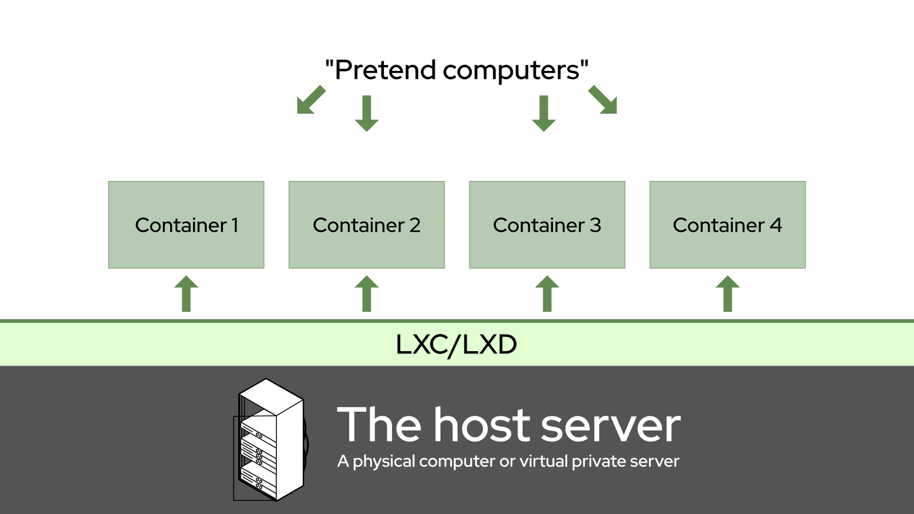
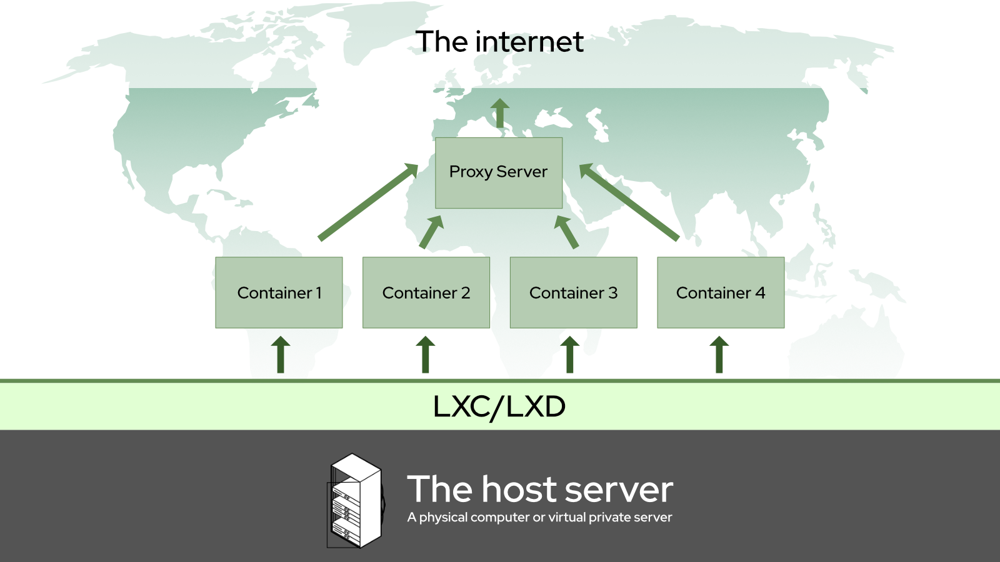
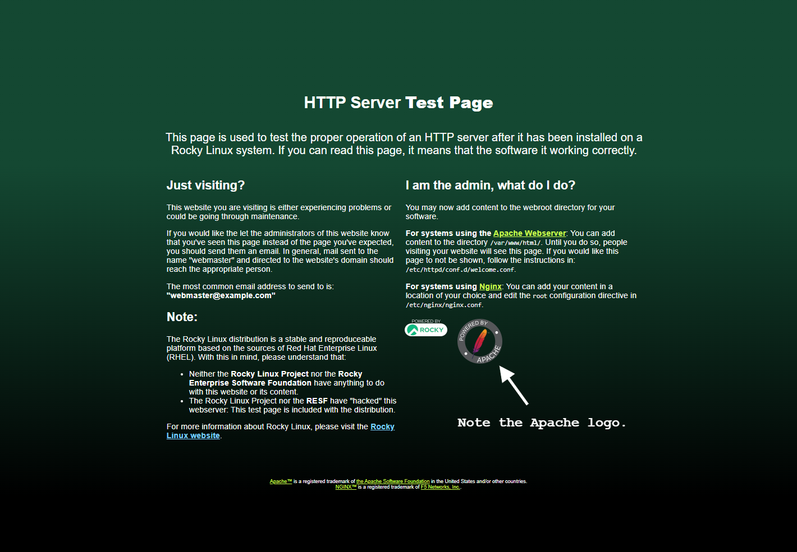
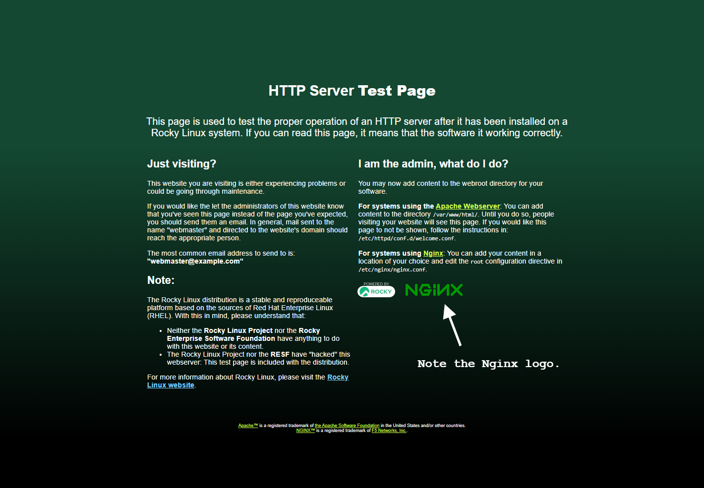

Building a Network of Websites/Web Servers With LXD, for Beginners
Introduction
Okay, so we already have a guide on installing LXD/LXC on Rocky Linux, but that was written by someone who knows what he’s doing, and wanted to build a containerized network of servers and/or apps on a physical machine on his local network. It’s great, and I’ll be straight up stealing bits of it so I don’t have to write as much.
But, if you’ve just heard about Linux Containers, and don’t really understand how they work yet, but you want to host some websites, this is the guide for you. This tutorial will teach you how to host basic websites with LXD and LXC on any system, including virtual private servers and cloud hosting.
So first, what’s a Linux Container? Well, for the absolute beginner, it’s a way to make one computer pretend that it’s actually a lot more computers. These “containers” each house a basic—usually stripped-down—version of an operating system you choose. You can use each container like an individual server; put nginx on one, Apache on another, and even use a third as a database server.
The basic advantage is that if one app or website inside its own container experiences severe bugs, a hack, or other problems, it’s unlikely to affect the rest of your server or the other apps and websites. Also, containers are super easy to snapshot, back up, and restore.
In this case, we’ll be running Rocky Linux in our containers, on top of our “host” system, which is also Rocky Linux.
Conceptually, it’s something like this:

If you’ve ever played with VirtualBox to run some Windows apps, it’s like that, but not. Unlike virtual machines, Linux Containers don’t emulate an entire hardware environment for each container. Rather, they all share a few virtual devices by default for networking and storage, though you can add more virtual devices. As a result, they require a lot less overhead (processing power and RAM) than a virtual machine.
For those Docker fiends out there (Docker being another container-based system, not a VM system), Linux Containers are less ephemeral than what you’re used to. All data in every container instance is persistent, and any changes you make are permanent unless you revert to a backup. In short, shutting down the container won’t erase your sins.
Heh.
LXD, specifically, is a command-line application that helps you to set up and manage Linux Containers. That's what we're going to be installing on our Rocky Linux host server today. I'm going to be writing LXC/LXD a lot though, as there's a lot of old documentation which refers to LXC only, and I'm trying to make it easier for people to find updated guides like this one.
!!! Note
There was a precursor app to LXD which was also called "LXC". As it stands today: LXC is the technology, LXD is the app.
We’ll be using them both to create an environment that works something like this:

Specifically, I’m going to show you how to set up simple Nginx and Apache web servers inside of your server containers, and use another container with Nginx as a reverse proxy. Again, this setup should work in any environment: from local networks to virtual private servers.
!!! Note
A reverse proxy is a program that takes incoming connections from the internet (or your local network) and routes them to the right server, container, or app. There are also dedicated tools for this job like HaProxy... but weirdly enough, I find Nginx a lot easier to use.
Prerequisites And Assumptions
- Basic familiarity with the Linux command line interface. You should know how to use SSH if you’re installing LXC/LXD on a remote server.
- An internet-connected server, physical or virtual, with Rocky Linux already running on it.
- Two domain names pointed right at your server with an A record.
- Two subdomains would also work just as well. One domain with a wildcard subdomain record would also, or a custom LAN domain... you get the picture.
- A command-line text editor. nano will do, micro is my favorite, but use whatever makes you comfortable.
- You can follow this whole tutorial as the root user, but you probably shouldn’t. After the initial installation of LXC/LXD, we’ll guide you in creating an unprivileged user specifically for operating LXD commands.
- We now have Rocky Linux images to base your containers on, and they’re awesome.
- If you're not too familiar with Nginx or Apache, you will need to check out some of our other guides if you want to get a full productions server up and running. Don't worry, I'll link them below.
Setting Up The Host Server Environment
So here’s where I’m going to copy and paste bits from the other LXD guide, for your convenience and mine. All credit for most of this part goes to Steven Spencer.
Install the EPEL Repository
LXD requires the EPEL (Extra Packages for Enterprise Linux) repository, which is easy to install using:
dnf install epel-release
Once installed, check for updates:
dnf update
If there were kernel updates during the update process above, reboot your server
Install snapd
LXD must be installed from a snap* package for Rocky Linux. For this reason, we need to install snapd with:
dnf install snapd
And now enable the snapd service to auto-start when your server reboots, and start it running now:
systemctl enable snapd
And then run:
systemctl start snapd
Reboot the server before continuing here. You can do this with the reboot command, or from your VPS/cloud hosting admin panel.
* snap is a method of packaging applications so they come with all of the dependencies they need, and can run on almost any Linux system.
Install LXD
Installing LXD requires the use of the snap command. At this point, we are just installing it, we are doing no set up:
snap install lxd
If you’re running LXD on a physical (AKA “bare metal”) server, you should probably go back to the other guide and read the “Environment Setup” section there. There’s a lot of good stuff about kernels and file systems, and so much more.
If you’re running LXD in a virtual environment, just reboot and read on.
LXD Initialization
Now that the environment is all set up, we are ready to initialize LXD. This is an automated script that asks a series of questions to get your LXD instance up and running:
lxd init
Here are the questions and our answers for the script, with a little explanation where warranted:
Would you like to use LXD clustering? (yes/no) [default=no]:
If you are interested in clustering, do some additional research on that here. Otherwise, just press “Enter” to accept the default option.
Do you want to configure a new storage pool? (yes/no) [default=yes]:
Accept the default.
Name of the new storage pool [default=default]: server-storage
Choose a name for your storage pool. I like to name it after the server LXD is running on. (A storage pool is basically a set amount of hard drive space set aside for your containers.)
Name of the storage backend to use (btrfs, dir, lvm, zfs, ceph) [default=zfs]: lvm
The above question is about what sort of file system you want to use for storage, and the default may vary depending on what’s available on your system. If you're on a bare metal server, and want to use ZFS, again, refer back to the guide linked above.
In a virtual environment, I have found that “LVM” works fine, and it’s usually what I use. You can accept the default on the next question.
Create a new LVM pool? (yes/no) [default=yes]:
If you have a specific hard drive or partition you’d like to use for the whole storage pool, write “yes” next. If you’re doing all of this on a VPS, you’ll probably have to choose “no”.
`Would you like to use an existing empty block device (e.g. a disk or partition)? (yes/no) [default=no]:`
Metal As A Service (MAAS) is outside the scope of this document. Accept the defaults for this next bit.
Would you like to connect to a MAAS server? (yes/no) [default=no]:
And more defaults. It's all good.
Would you like to create a new local network bridge? (yes/no) [default=yes]:
What should the new bridge be called? [default=lxdbr0]: `
What IPv4 address should be used? (CIDR subnet notation, “auto” or “none”) [default=auto]:
If you want to use IPv6 on your LXD containers, you can turn on this next option. That is up to you, but you mostly shouldn’t need to. I think. I tend to leave it on out of laziness.
What IPv6 address should be used? (CIDR subnet notation, “auto” or “none”) [default=auto]:
This is necessary to easily back up the server, and can allow you to manage your LXD install from other computers. If that all sounds good to you, answer "yes" here/
Would you like the LXD server to be available over the network? (yes/no) [default=no]: yes
If you did say yes to the last questions, take the defaults here:
Address to bind LXD to (not including port) [default=all]:
Port to bind LXD to [default=8443]:
Now you'll be asked for a trust password. That's how you will connect to the LXC host server from other computers and servers, so set this with something that makes sense in your environment. Save this password to a secure location, such as a password manager.
Trust password for new clients:
Again:
And then keep taking the defaults from here on out:
Would you like stale cached images to be updated automatically? (yes/no) [default=yes]
Would you like a YAML "lxd init" preseed to be printed? (yes/no) [default=no]:
Setting Up User Privileges
Before we continue on, we need to create our "lxdadmin" user and make sure that it has the privileges it needs. We need the "lxdadmin" user to be able to use sudo for access to root commands, and we need it to be a member of the “lxd” group. To add the user and make sure it is a member of both groups, run:
useradd -G wheel,lxd lxdadmin
Then set the password:
passwd lxdadmin
As with the other passwords, save this to a secure location.
Setting Up Your Firewall
Before we do anything else with containers, you need to be able to access your proxy server from the outside. If your firewall is blocking port 80 (the default port used for HTTP/web traffic), or port 443 (used for HTTPS/secure web traffic), then you won’t be doing much of anything server-wise.
The other LXD guide will show you how to do this with the iptables firewall, if that’s what you want to do. I tend to use the CentOS default firewall: firewalld. So that’s what we’re doing, this time.
firewalld is configured via the firewall-cmd command. The absolute first thing we want to do, before we open any ports, is make sure that your containers can be assigned their IP addresses automatically:
firewall-cmd --zone=trusted --permanent --change-interface=lxdbr0
!!! Warning
If you don't do that last step, your containers will not be able to properly access the internet, or each other. This is crazy-essential, and knowing it will save you *ages* of frustration.
Now, to add a new port, just run this:
firewall-cmd --permanent --zone=public --add-port=80/tcp
Let’s break this down:
- The
-–permanentflag tells the firewall to make sure this configuration is used every time the firewall is restarted, and when the server itself is restarted. –-zone=publictells the firewall to take incoming connections to this port from everyone.- Lastly,
–-add-port=80/tcptells the firewall to accept incoming connections over port 80, as long as they’re using the Transmission Control Protocol, which is what you want in this case.
To repeat the process for HTTPS traffic, just run the command again, and change the number.
firewall-cmd --permanent --zone=public --add-port=443/tcp
These configurations won’t take effect until you force the issue. To do that, tell firewalld to reload its configurations, like so:
firewall-cmd --reload
Now, there’s a very small chance that this won’t work. In those rare cases, make firewalld do your bidding with the old turn-it-off-and-turn-it-on-again.
systemctl restart firewalld
To make sure the ports have been added properly, run firewall-cmd --list-all. A properly-configured firewall will look a bit like this (I have a few extra ports open on my local server, ignore them):
public (active)
target: default
icmp-block-inversion: no
interfaces: enp9s0
sources:
services: cockpit dhcpv6-client ssh
ports: 81/tcp 444/tcp 15151/tcp 80/tcp 443/tcp
protocols:
forward: no
masquerade: no
forward-ports:
source-ports:
icmp-blocks:
rich rules:
And that should be everything you need, firewall-wise.
Setting Up The Containers
Actually managing containers is pretty easy. Just think of it as being able to conjure up a whole computer on command, and start or stop it at will. You can also log into said “computer” and run any commands you like, just as you would with your host server.
!!! Note
From here on out, every command should be run as the `lxdadmin` user, or whatever you decided to call it, though some will require the use of *sudo* for temporary root privileges.
You’re going to need three containers for this tutorial: the reverse proxy server, a test Nginx server, and a test Apache server, all running on Rocky-based containers.
If for some reason you need a fully privileged container (and you mostly shouldn’t), you can run all of these commands as root.
For this tutorial, you’ll need three containers:
We’ll call them “proxy-server” (for the container that will be directing web traffic to the other two containers), “nginx-server”, and “apache-server”. Yes, I’ll be showing you how to reverse proxy to both nginx and apache-based servers. Things like docker or NodeJS apps we can wait with until I figure that out myself.
We’ll start by figuring out which image we want to base our containers on. For this tutorial, we’re just using Rocky Linux. Using Alpine Linux, for example, can result in much smaller containers (if storage is a concern), but that’s beyond the scope of this particular document.
Finding the Image You Want
Here’s the short, short method for starting a container with Rocky Linux:
lxc launch images:rockylinux/8/amd64 my-container
Of course, that “my-container” bit at the end should be renamed to whatever container name you want, eg. “proxy-server”. The “/amd64” part should be changed to “arm64” if you’re doing all of this on something like a Raspberry Pi.
Now here’s the long version: to find the images you want, you can use this command to list every available image in the main LXC repositories:
lxc image list images: | more
Then just press “Enter” to scroll down a massive list of images, and press “Control-C” to get out of the list-viewing mode.
Or, you could simplify your life, and specify what kind of Linux you want, like so:
lxc image list images: | grep rockylinux
That should print out a much shorter list that looks like this:
| rockylinux/8 (3 more) | 4e6beda70200 | yes | Rockylinux 8 amd64 (20220129_03:44) | x86_64 | VIRTUAL-MACHINE | 612.19MB | Jan 29, 2022 at 12:00am (UTC) |
| rockylinux/8 (3 more) | c04dd2bcf20b | yes | Rockylinux 8 amd64 (20220129_03:44) | x86_64 | CONTAINER | 127.34MB | Jan 29, 2022 at 12:00am (UTC) |
| rockylinux/8/arm64 (1 more) | adc0561d6330 | yes | Rockylinux 8 arm64 (20220129_03:44) | aarch64 | CONTAINER | 124.03MB | Jan 29, 2022 at 12:00am (UTC) |
| rockylinux/8/cloud (1 more) | 2591d9716b04 | yes | Rockylinux 8 amd64 (20220129_03:43) | x86_64 | CONTAINER | 147.04MB | Jan 29, 2022 at 12:00am (UTC) |
| rockylinux/8/cloud (1 more) | c963253fcea9 | yes | Rockylinux 8 amd64 (20220129_03:43) | x86_64 | VIRTUAL-MACHINE | 630.56MB | Jan 29, 2022 at 12:00am (UTC) |
| rockylinux/8/cloud/arm64 | 9f49e80afa5b | yes | Rockylinux 8 arm64 (20220129_03:44) | aarch64 | CONTAINER | 143.15MB | Jan 29, 2022 at 12:00am (UTC) |
Creating the Containers
!!! Note
Below, is a quick way to create all of these containers. You may want to wait before creating the proxy-server container. There's a trick I'll show you down below that could save you time.
Once you’ve found the image you want, use the lxc launch command as shown above. To make the containers we want for this tutorial, run these commands (modifying them as needed) in succession:
lxc launch images:rockylinux/8/amd64 proxy-server
lxc launch images:rockylinux/8/amd64 nginx-server
lxc launch images:rockylinux/8/amd64 apache-server
As you run each command, you should get a notification that your containers have been created, and even started. Then, you’ll want to check on all of them.
Run this command to see that they’re all up and running:
lxc list
That should give you output that looks a bit like this (though, if you opted to use IPv6, it’s going to be a lot more text):
+---------------+---------+-----------------------+------+-----------+-----------+
| NAME | STATE | IPV4 | IPV6 | TYPE | SNAPSHOTS |
+---------------+---------+-----------------------+------+-----------+-----------+
| proxy-server | RUNNING | 10.199.182.231 (eth0) | | CONTAINER | 0 |
+---------------+---------+-----------------------+------+-----------+-----------+
| nginx-server | RUNNING | 10.199.182.232 (eth0) | | CONTAINER | 0 |
+---------------+---------+-----------------------+------+-----------+-----------+
| apache-server | RUNNING | 10.199.182.233 (eth0) | | CONTAINER | 0 |
+---------------+---------+-----------------------+------+-----------+-----------+
A Word on Container Networking
So the other guide linked at the beginning of this one has a whole tutorial on how to set LXC/LXD up to work with Macvlan. This is especially useful if you’re running a local server, and you want each container to have an IP address visible on the local network.
When you’re running on a VPS, you don’t often have that option. In fact, you might only have one single IP address that you’re allowed to work with. No biggie. The default networking configuration is designed to accommodate this sort of limitation; answering the lxd init questions as I specified above should take care of everything.
Basically, LXD creates a virtual network device called a bridge (usually named “lxdbr0”), and all containers get connected to that bridge by default. Through it, they can connect to the internet via your host’s default network device (ethernet, wi-fi, or a virtual network device provided by your VPS). Somewhat more importantly, all of the containers can connect to each other.
To ensure this inter-container connection, every container gets an internal domain name. By default, this is just the name of the container plus “.lxd”. So the “proxy-server” container is available to all the other containers at “proxy-server.lxd”. But here’s the really important thing to know: by default “.lxd” domains are only available inside the containers themselves.
If you run ping proxy-server.lxd on the host OS (or anywhere else), you’ll get nothing. Those internal domains are going to come in super handy later on, though.
You can technically change this, and make the container’s internal domains available on the host… but I never actually figured that out. It’s probably best to put your reverse proxy server in a container anyway, so you can snapshot and back it up with ease.
Managing Your Containers
Some things you should know before going forward:
Starting & Stopping
All containers can be started, stopped, and restarted as needed with the following commands:
lxc start mycontainer
lxc stop mycontainer
lxc restart mycontainer
Hey, even Linux needs to reboot sometimes. And heck, you can actually start, stop, and restart all containers at once with the following commands.
lxc start --all
lxc stop --all
lxc restart --all
That restart --all option comes in real handy for some of the more obscure temporary bugs.
Doing Stuff Inside Your Containers
You can control the operating system inside your container in two ways: you can just run commands inside them from the host OS, or you can open a shell.
Here’s what I mean. To run a command inside a container, maybe to install Apache, just use lxc exec, like so:
lxc exec my-container dnf install httpd -y
That will make Apache install on its own, and you will see the output of the command on your host’s terminal.
To open a shell (where you can just run all the commands you want as root), use this:
lxc exec my-container bash
If you’re like me, valuing convenience over storage space, and have installed an alternate shell like fish in all of your containers, just change the command like so:
lxc exec my-container fish
In almost all instances, you’ll automatically be placed on the root account, and in the /root directory.
Finally, if you've opened a shell into a container, you leave it the same way you leave any shell: with a simple exit command.
Copying Containers
Now, if you have a container you’d like to replicate with minimal effort, you don’t need to start a brand new one and install all of your base applications again. That’d be silly. Just run:
lxc copy my-container my-other-container
An exact copy of “my-container” will be created with the name “my-other-container”. It may not start automatically though, so make any changes you might want to make to your new container’s configuration, then run:
lxc start my-other-container
At this point, you may want to make some changes, like changing the container’s internal hostname, or something.
Configuring Storage & CPU Limits
LXC/LXD usually defines how much storage space a container gets, and generally manages resources, but you might want control over that. If you’re worried about keeping your containers small, you can use the lxc config command to shrink and stretch them as needed.
The following command will set a “soft” limit of 2GB on a container. A soft limit is actually more of a “minimum storage”, and the container will use more storage if it’s available. As always, change “my-container” to the name of the actual container.
lxc config set my-container limits.memory 2GB
You can set a hard limit like so:
lxc config set my-container limits.memory.enforce 2GB
And if you want to make sure that any given container can’t take over all the processing power available to your server, you can limit the CPU cores it has access to with this command. Just change the number of CPU cores at the end as you see fit.
lxc config set my-container limits.cpu 2
Deleting Containers (and How to Keep That From Happening)
Lastly, you can delete containers by running this command:
lxc delete my-container
You won’t be able to delete the container if it’s running, so you can either stop it first, or use the -–force flag to skip that part.
lxc delete my-container --force
Now, thanks to tab -command-completion, user error, and the fact that “d” sits next to “s” on most keyboards, you can accidentally delete containers. This is known, in the business, as THE BIG OOPS. (Or at least it’ll be known as THE BIG OOPS when I’m done here.)
To defend against that, you can set any container to be “protected” (making the process of deleting them take an extra step) with this command:
lxc config set my-container security.protection.delete true
To un-protect the container, just run the command again, but change “true” to “false”.
Setting Up The Servers
Okay, now that your containers are up and running, it’s time to install what you need. First, make sure all of them are updated with the following commands (skip the “proxy-server” container if you haven’t created it yet):
lxc exec proxy-server dnf update -y
lxc exec nginx-server dnf update -y
lxc exec apache-server dnf update -y
Then, jump into each container, and get cracking.
You’ll also need a text editor for every container. By default, Rocky Linux comes with vi, but if you want to simplify your life, nano will do. You can install it in each container before you open them up.
lxc exec proxy-server dnf install nano -y
lxc exec nginx-server dnf install nano -y
lxc exec apache-server dnf install nano -y
I’ll be using nano in all of the text-editor-related commands going forward, but you do you.
The Apache website server
We're going to keep this short, for learning and testing purposes. Look below for a link to your full Apache guides.
First, open up a shell into your container. Note that by default, containers will drop you into the root account. For our purposes, that's fine, though you may want to create a specific web server user for actual production purposes.
lxc exec apache-server bash
Once you’re logged in, just install Apache the easy way:
dnf install httpd
Now, you could follow our Apache Web Server Multi-Site Setup guide from here on out, but that’s actually kind of overkill for our purposes. We don’t usually want to set up Apache for multiple websites in a containerized environment like this. The whole point of containers is a separation of concerns, after all.
Also, the SSL certificates are going on the proxy server, so we’re going to keep things simple.
Once Apache is installed, make sure it’s running, and can keep running on reboot:
systemctl enable --now httpd
The --now flag lets you skip the command to start the actual server. For reference, that would be:
systemctl start httpd
If you have curl installed on your server host, you can make sure the default web page is up and running with:
curl [container-ip-address]
Remember, you can see all contkainer IPs with lxc list. And if you install curl on all your containers, you could just run:
curl localhost
Getting real user IPs from the proxy server
Now here's a step that you'll need to do to prepare Apache for using the reverse proxy. By default, the actual IP addresses of users will not be logged by the servers in your web server containers. You want those IP addresses to go through because some web apps need user IPs for things like moderation, banning, and troubleshooting.
To make your visitor's IP addresses get past the proxy server, you need two parts: the right settings in the proxy server (we'll cover that later), and a simple configuration file for the Apache server.
A big thanks goes out to Linode and their own LXD guide for the templates for these config files.
Make a new config file:
nano /etc/httpd/conf.d/real-ip.conf
And add this text to it:
RemoteIPHeader X-Real-IP
RemoteIPTrustedProxy proxy-server.lxd
Remember to change proxy-server.lxd to whatever you called your actual proxy container, if necessary. Now don't restart the Apache server just yet. That configuration file we added could cause problems until we get the proxy server up and running.
Exit the shell for now, and let's start on the Nginx server.
!!! Note
While this technique *does* work (your web apps and websites will get the users' real IPs), Apache's own access logs *will not show the right IPs.* They'll usually show the IP of the container that your reverse proxy is in. This is apparently a problem with how Apache logs things.
I've found loads of solutions on Google, and none of them have actually worked for me. Watch this space for someone much smarter than I am to figure it out. In the meantime, you can check the proxy server's access logs if you need to see the IP addresses yourself, or check the logs of whatever web app you're installing.
The Nginx website server
Again, we're keeping this short. If you want to use the latest (and recommended) version of Nginx in production, check out our beginner's guide to installing Nginx. That covers the full install guide, and some best practices for configuring your server.
For testing and learning, you could just install Nginx normally, but I recommend installing the latest version, which is called the "mainline" branch.
First, log into the container's shell:
lxc exec nginx-server bash
Then, install the epel-release repository so you can install the latest version of Nginx:
dnf install epel-release
Once that's done, search for the latest version of Nginx with:
dnf module list nginx
That should get you a list that looks like this:
Rocky Linux 8 - AppStream
Name Stream Profiles Summary
nginx 1.14 [d] common [d] nginx webserver
nginx 1.16 common [d] nginx webserver
nginx 1.18 common [d] nginx webserver
nginx 1.20 common [d] nginx webserver
nginx mainline common [d] nginx webserver
The one you want is, you guessed it: the mainline branch. Enable the module with this command:
dnf enable module nginx:mainline
You'll be asked if you're sure you want to do this, so just choose Y as usual. Then, use the default command to install Nginx:
dnf install nginx
Then, enable and start Nginx:
dnf enable --now nginx
!!! Note
Remember when I said to wait before creating the proxy container? Here's why: at this point, you can save yourself some time by leaving the "nginx-server" container, and copying it to make the "proxy-server" container:
```bash
lxc copy nginx-server proxy-server
```
Make sure to start the proxy container with `lxc start proxy-server`, and add the proxy ports to the container as detailed below.
Again, you can make sure the container is working from the host with:
curl [your-container-ip]
Getting real user IPs from the proxy server (again)
The logs should work this time. Should. To do this, we're putting a very similar file in /etc/nginx/conf.d:
nano /etc/nginx/conf.d/real-ip.conf
Then put this text in it:
real_ip_header X-Real-IP;
set_real_ip_from proxy-server.lxd;
Lastly, don't restart the server yet. Again, that config file could cause problems until the proxy server is set up.
The Reverse Proxy Server
So remember when I said you'd need two domains or subdomains? This is where you need them. The subdomains I'm using for this tutorial are:
- apache.server.test
- nginx.server.test
Change them in all the files and instructions as needed.
If you copied the "proxy-server" container from your "nginx-server" container, and you've added your proxy devices to it, just jump on into the shell. If you created the container earlier, you'll need to repeat all the steps for installing Nginx in the "proxy-server" container.
Once it's installed and you know it runs okay, you just need to set up a couple of configuration files to direct traffic from your chosen domains to the actual website servers.
Before you do that, make sure you can access both servers via their internal domains:
curl apache-server.lxd
curl nginx-server.lxd
If those two commands load the HTML of the default server welcome pages in your terminal, then everything has been set up correctly.
Essential Step: Configuring the “proxy-server” Container to Take all Incoming Server Traffic
Again, you might want to do this later when you actually create the proxy server, but here are the instructions you'll need:
Remember when we opened up ports 80 and 443 in the firewall? Here’s where we make the “proxy-server” container listen to those ports, and take all the traffic directed at them.
Just run these two commands in succession:
lxc config device add proxy-server myproxy80 proxy listen=tcp:0.0.0.0:80 connect=tcp:127.0.0.1:80
lxc config device add proxy-server myproxy443 proxy listen=tcp:0.0.0.0:443 connect=tcp:127.0.0.1:443
Let’s break that down. Each command is adding a virtual “device” to the proxy-server container. Those devices are set to listen on the host OS’ port 80 and port 443, and bind them to the container’s port 80 and port 443. Each device needs a name, so I’ve chosen “myproxy80”, and “myproxy443”.
The “listen” option is the port on the host OS, and if I’m not mistaken, 0.0.0.0 is the IP address for the host on the “lxdbr0” bridge. The “connect” option is the local IP address and ports being connected to.
!!! Note
Once these devices have been set up, you should reboot all the containers, just to be sure.
These virtual device should ideally be unique. It's usually best not to add a “myport80” device to another container that's currently running; it’ll have to be called something else.
Likewise, only one container can listen on any specific host OS port at a time.
Directing traffic to the Apache server
In the "proxy-server" container, create a configuration file called apache-server.conf in /etc/nginx/conf.d/:
nano /etc/nginx/conf.d/apache-server.conf
Then paste this test in, change the domain name as necessary, and save it:
upstream apache-server {
server apache-server.lxd:80;
}
server {
listen 80 proxy_protocol;
listen [::]:80 proxy_protocol;
server_name apache.server.test; #< Your domain goes here
location / {
proxy_pass http://apache-server;
proxy_redirect off;
proxy_set_header Host $host;
proxy_set_header X-Real-IP $remote_addr;
proxy_set_header X-Forwarded-For $proxy_add_x_forwarded_for;
proxy_set_header X-Forwarded-Proto $scheme;
}
}
Let's break that down a little:
- The
upstreamsection is defining exactly where the reverse proxy is going to send all its traffic. Specifically, it's sending traffic to the "apache-server" container's internal domain name:apache-server.lxd. - The two lines that start with
listenare telling the server to listen to traffic coming in on port 80 with the proxy protocol. The first via IPv4, and the second via IPv6. - The
server_namefunction takes all the traffic that's specifically coming to "apache.server.test" and routes it through the reverse proxy. - The
proxy-passfunction is the part that actually directs all traffic captured by theserver_namevariable, and sends it to the server defined in theupstreamsection. - The
proxy_redirectfunction can apparently interfere with reverse proxies, so we're making sure it's turned off. - All of the
proxy-set-headeroptions are sending information like the user's IP and more to the web server.
!!! warning
The `proxy_protocol` bit in the `listen` variables is *essential* for the proxy server to work. Never leave it out.
For every LXD/website configuration file, you'll need to change the upstream, server, server_name, and proxy_pass settings accordingly. The text after "http://" in proxy-pass must match the txt that comes after the upstream text.
Reload the server with systemctl restart nginx, then point your browser at whatever domain you're using instead of apache.server.test. If you see a page that looks like this, you're golden:

!!! Note
You can name the config files whatever you like. I'm using simplified names for the tutorials, but some sysadmins recommend names based on the actual domain, but backwards. It's an alphabetical order-based organization thing.
eg. "apache.server.test" would get a configuration file named `test.server.apache.conf`.
Directing traffic to the Nginx server
Just kinda repeat the process. Create a file just like before:
nano /etc/nginx/conf.d/nginx-server.conf
Add the approriate text:
upstream nginx-server {
server rocky-nginx.lxd:80;
}
server {
listen 80 proxy_protocol;
listen [::]:80 proxy_protocol;
server_name nginx.server.test; #< Your domain goes here
location / {
proxy_pass http://nginx-server;
proxy_redirect off;
proxy_set_header Host $host;
proxy_set_header X-Real-IP $remote_addr;
proxy_set_header X-Forwarded-For $proxy_add_x_forwarded_for;
proxy_set_header X-Forwarded-Proto $scheme;
}
}
Again, reload the proxy server, point your browser at the appropriate address, and hope to whatever deity your prefer that you see this:

Restart the servers in your web server containers
Exit back out of the "proxy-server" container, and restart the servers in your other two containers with one simple command:
lxc exec apache-server systemctl restart httpd && lxc exec nginx-server restart nginx
That will apply the "real-ip.conf" files we made to their respective server configurations.
Getting SSL certificates for your websites
Getting official, proper SSL certificates is easiest with Let's Encrypt, and a little application called certbot. certbot will automatically detect your websites, get SSL certificates for them, and configure the sites itself. It will even renew the certificates for you every 30 days or so, without any intervention from you or cron jobs.
This all has to be done from the "proxy-server" container, so log into that shell. Once there, install the EPEL repositories, just like you did on the host. Make sure the container is updated first:
dnf update
Then, add the EPEL repository:
dnf install epel-release
Then you just need to install certbot and its Nginx module:
dnf install certbot python3-certbot-nginx
Once installed, as long as you already have a couple of websites configured, just run:
certbot --nginx
Certbot will read your Nginx configuration, and figure out how many websites you have and if they need SSL certificates. At this point, you'll be asked a few questions. Do you accept the terms of service, do you want emails, etc?
The most important questions are as follows. Enter your email address when you see this:
Saving debug log to /var/log/letsencrypt/letsencrypt.log
Enter email address (used for urgent renewal and security notices)
(Enter 'c' to cancel):
Here you can choose which websites get certificates. Just hit enter to get certificates for all of them.
Which names would you like to activate HTTPS for?
- - - - - - - - - - - - - - - - - - - - - - - - - - - - - - - - - - - - - - - -
1: apache.server.test
2: nginx.server.test
- - - - - - - - - - - - - - - - - - - - - - - - - - - - - - - - - - - - - - - -
Select the appropriate numbers separated by commas and/or spaces, or leave input
blank to select all options shown (Enter 'c' to cancel):
You'll see a bunch of confirmation text, and it'll be done. But if you go to your websites, you might find that they don't work. This is because when certbot creates the updated configuration, it forgets one very important thing.
Go into your apache-server.conf and nginx-server.conf files, and find the following two lines:
listen [::]:443 ssl ipv6only=on; # managed by Certbot
listen 443 ssl; # managed by Certbot
Yep, they're missing the proxy_protocol setting, and that's bad. Add it in yourself.
listen proxy_protocol [::]:443 ssl ipv6only=on; # managed by Certbot
listen proxy_protocol 443 ssl; # managed by Certbot
Save the file, restart the server, and your websites should load without any issue.
Notes
- In this tutorial, I didn't mention configuring the actual web servers much. The very least you should do, in production, is change the domains names in the server config files in your actual web server containers, and not just the proxy container. And maybe set up a web server user in each.
- If you want to know a bit more about managing SSL certificates and SSL server configurations manually, check out our guide to installing certbot and generating SSL certificates.
- Apps like Nextcloud will require some extra configuration (for security reasons) if you put them in an LXD container behind a proxy.
Conclusion
There's a lot more to learn about LXC/LXD, containerization, web servers, and running websites, but that should honestly give you a good start. Once you learn how everything should be set up, and how to configure things the way you like, you can even begin to automate the process.
You might use Ansible, or you might be like me, and just have a custom-written set of scripts that you run to make everything go faster. You can even create small "template containers" with all of your favorite software preinstalled, then just copy them and expand their storage capacity as needed.
Okay. This is done. I'm off to play video games. Have fun!